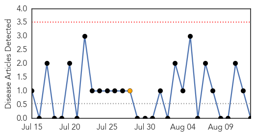
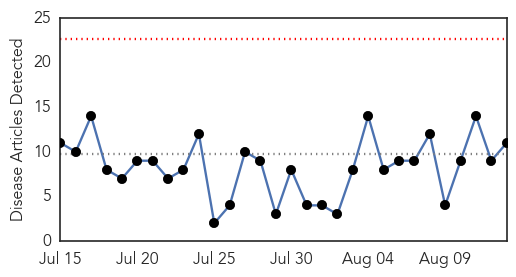
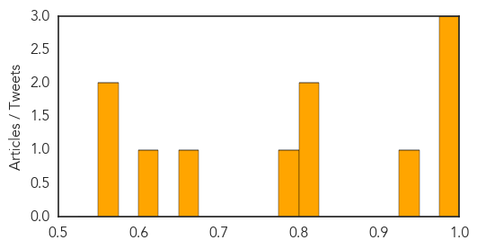

Mold/Fungal
30-Day Web Trend
0 alerts, 1 warnings

30-Day Twitter Trend
0 alerts, 0 warnings

Article Locations

Article Confidences

Top Articles:
-
No articles found for Aug 13, 2015
Top Tweets:
-
No tweets found for Aug 13, 2015
Dengue Fever
30-Day Web Trend
0 alerts, 0 warnings

30-Day Twitter Trend
1 alerts, 0 warnings

Article Locations
Article Confidences
Top Articles:
- 0.994
- Dengue outbreak likely in Ha Noi
- 0.991
- Dengue outbreak likely in Hanoi — Talk Vietnam
- 0.976
- Resurgence of Tropical Diseases in US
- 0.927
- South Korea Travel Health Guide
- 0.820
- Can the United States Cope With a Resurgence of Tropical Disease?
- 0.812
- Mend your ways, Collector tells medical authorities
- 0.793
- Is America ready for a new wave of tropical diseases?
- 0.671
- Dengue rife, malaria spreading in filthy streets of Yemen: charity
- 0.620
- Can America cope with a resurgence of tropical disease?
- 0.574
- What the Church is doing to help flood victims in Myanmar
- 0.572
- Houthi reinforcements arrive in Taiz as Yemeni loyalists advance
Top Tweets:
- 0.650
- ‘Submit report on dengue, swine flu, malaria cases’ - The Times of India http://t.co/19ILKoB7fa http://t.co/sG7EZCmGaV